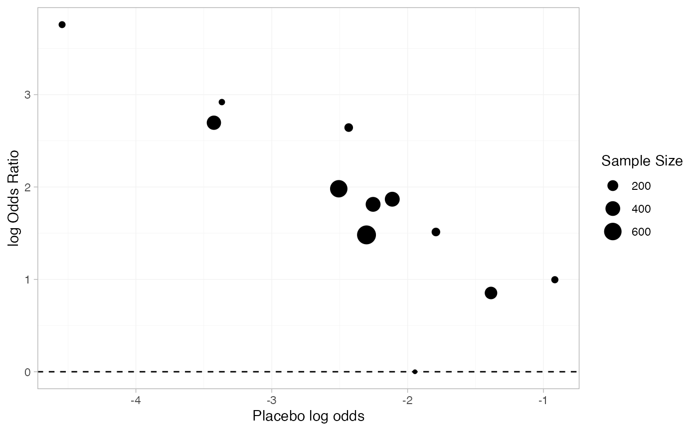
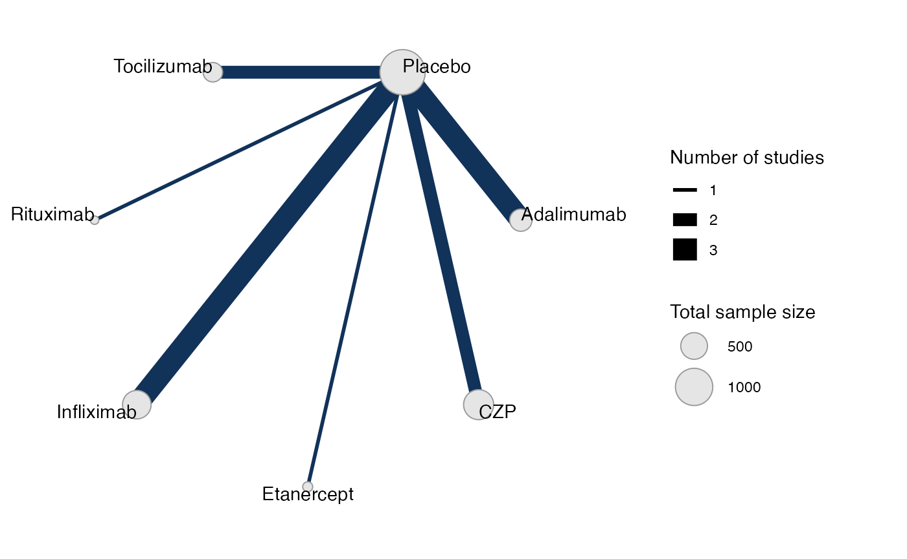
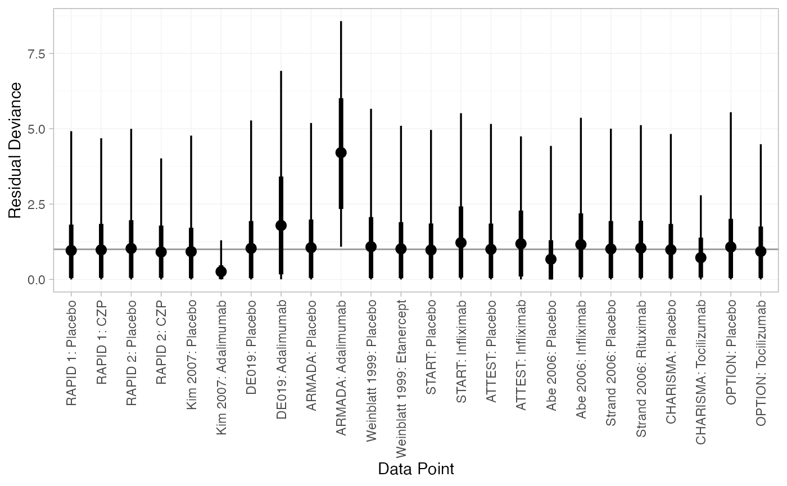
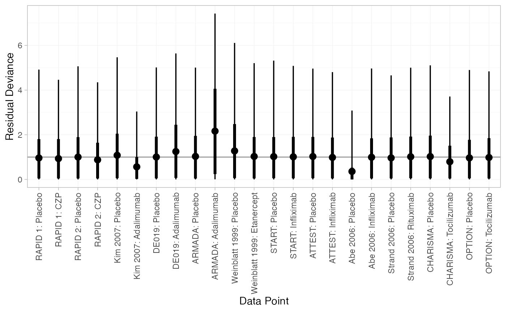
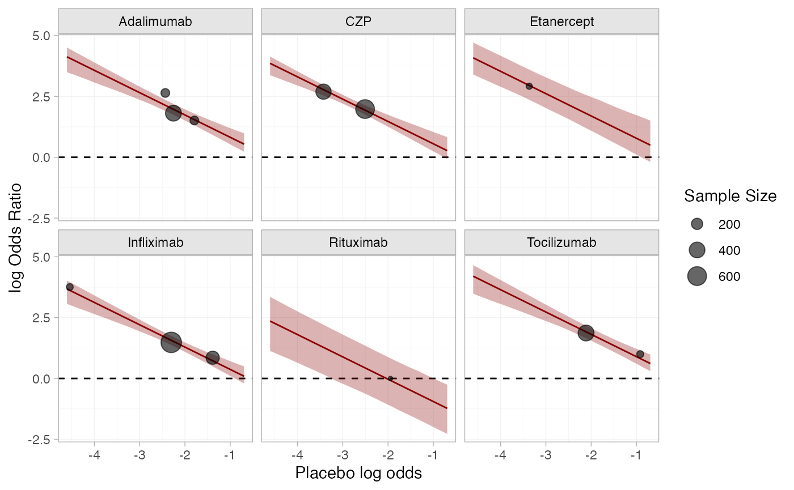
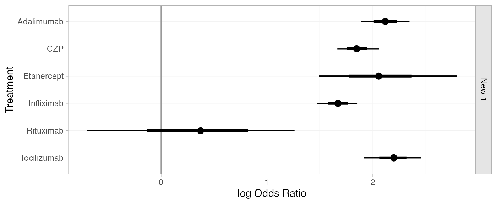
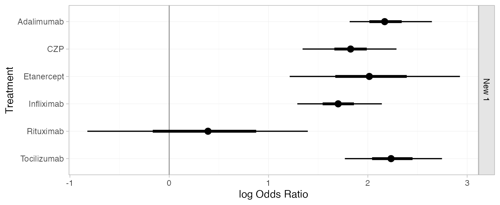
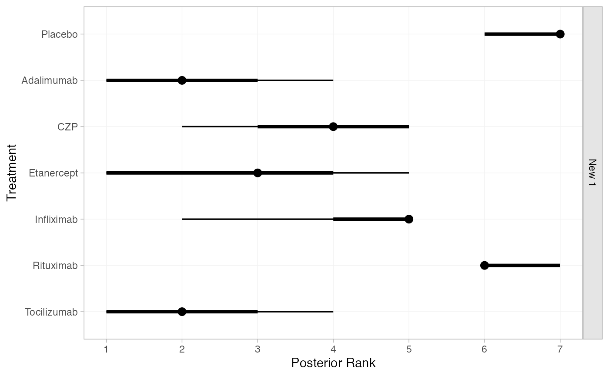
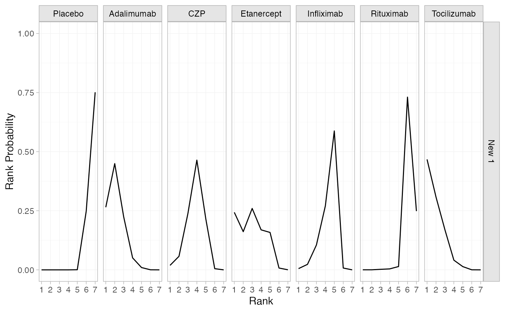
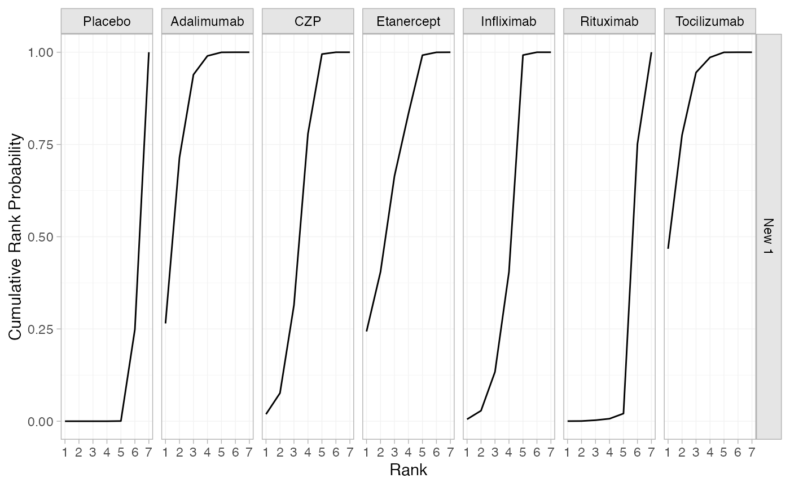

library(multinma)
options(mc.cores = parallel::detectCores())#> For execution on a local, multicore CPU with excess RAM we recommend calling
#> options(mc.cores = parallel::detectCores())
#>
#> Attaching package: 'multinma'
#> The following objects are masked from 'package:stats':
#>
#> dgamma, pgamma, qgamma
library(dplyr)
#>
#> Attaching package: 'dplyr'
#> The following objects are masked from 'package:stats':
#>
#> filter, lag
#> The following objects are masked from 'package:base':
#>
#> intersect, setdiff, setequal, union
library(ggplot2)This vignette describes the analysis of 12 trials comparing 6
treatments against placebo for “the treatment of rheumatoid arthritis
(RA) in patients who had failed on disease-modifying anti-rheumatic
drugs (DMARDs)” (Dias et al.
2011). The data are available in this package as
certolizumab:
head(certolizumab)
#> study trt r n disease_duration
#> 1 RAPID 1 Placebo 15 199 6.15
#> 2 RAPID 1 CZP 146 393 6.15
#> 3 RAPID 2 Placebo 4 127 5.85
#> 4 RAPID 2 CZP 80 246 5.85
#> 5 Kim 2007 Placebo 9 63 6.85
#> 6 Kim 2007 Adalimumab 28 65 6.85Dias et al. (2011) used this data to demonstrate baseline risk meta-regression models. Plotting the baseline risk against the treatment effect, we suspect there might be an effect of the baseline risk on the treatment effect. Specifically, the log baseline odds (placebo in this case) seem to be negatively linearly correlated with the odds ratio. For purposes of plotting only, we apply a continuity correction to the Abe 2006 study, in which no events were observed on placebo.
certolizumab <-
certolizumab %>%
group_by(study) %>%
mutate(
cc = any(r == 0),
probability = if_else(cc, (r + 0.5) / (n + 0.5), r / n),
odds = probability / (1 - probability),
log_odds = log(odds)
)
p_baseline_risk <-
left_join(
filter(certolizumab, trt != "Placebo"),
filter(certolizumab, trt == "Placebo"),
by = "study",
suffix = c("", "_baseline")
) %>%
mutate(log_odds_ratio = log_odds - log_odds_baseline, n_total = n + n_baseline) %>%
ggplot(aes(log_odds_baseline)) +
geom_hline(yintercept = 0, linetype = "dashed") +
labs(x = "Placebo log odds", y = "log Odds Ratio", size = "Sample Size") +
theme_multinma()
p_baseline_risk +
geom_point(aes(y = log_odds_ratio, size = n_total))
Setting up the network
We begin by setting up the network.
cert_net <- set_agd_arm(certolizumab,
study = study, trt = trt, n = n, r = r,
trt_class = if_else(trt == "Placebo", "Placebo", "Treatment"))
cert_net
#> A network with 12 AgD studies (arm-based).
#>
#> ------------------------------------------------------- AgD studies (arm-based) ----
#> Study Treatment arms
#> Abe 2006 2: Placebo | Infliximab
#> ARMADA 2: Placebo | Adalimumab
#> ATTEST 2: Placebo | Infliximab
#> CHARISMA 2: Placebo | Tocilizumab
#> DE019 2: Placebo | Adalimumab
#> Kim 2007 2: Placebo | Adalimumab
#> OPTION 2: Placebo | Tocilizumab
#> RAPID 1 2: Placebo | CZP
#> RAPID 2 2: Placebo | CZP
#> START 2: Placebo | Infliximab
#> ... plus 2 more studies
#>
#> Outcome type: count
#> ------------------------------------------------------------------------------------
#> Total number of treatments: 7, in 2 classes
#> Total number of studies: 12
#> Reference treatment is: Placebo
#> Network is connectedPlot the network structure.
plot(cert_net, weight_edges = TRUE, weight_nodes = TRUE)
Meta-analysis models
We fit both fixed effect (FE) and random effects (RE) models. The
special variable .mu is used in the regression
formula to specify a baseline risk meta-regression model.
Fixed effect meta-analysis
cert_fit_FE <- nma(cert_net,
trt_effects = "fixed",
regression = ~.mu:.trt,
prior_intercept = normal(scale = sqrt(1000)),
prior_trt = normal(scale = 100),
prior_reg = normal(scale = 100),
adapt_delta = 0.95)
#> Note: Setting "Placebo" as the network reference treatment.
#> Warning: There were 1 divergent transitions after warmup. See
#> https://mc-stan.org/misc/warnings.html#divergent-transitions-after-warmup
#> to find out why this is a problem and how to eliminate them.
#> Warning: Examine the pairs() plot to diagnose sampling problemsWe may see a few divergent transitions due to the zero on placebo in
Abe 2006; increasing adapt_delta to 0.95 here helps to
minimise these.
Basic parameter summaries are given by the print()
method:
cert_fit_FE
#> A fixed effects NMA with a binomial likelihood (logit link).
#> Regression model: ~.mu:.trt.
#> Centred covariates at the following overall mean values:
#> .mu
#> -2.41557
#> Inference for Stan model: binomial_1par.
#> 4 chains, each with iter=2000; warmup=1000; thin=1;
#> post-warmup draws per chain=1000, total post-warmup draws=4000.
#>
#> mean se_mean sd 2.5% 25% 50% 75%
#> beta[.mu:.trtclassTreatment] -0.92 0.00 0.10 -1.04 -0.99 -0.95 -0.87
#> d[Adalimumab] 2.12 0.00 0.12 1.89 2.04 2.12 2.20
#> d[CZP] 1.85 0.00 0.10 1.67 1.78 1.85 1.92
#> d[Etanercept] 2.08 0.01 0.35 1.49 1.86 2.06 2.28
#> d[Infliximab] 1.67 0.00 0.10 1.47 1.60 1.67 1.74
#> d[Rituximab] 0.35 0.01 0.50 -0.70 0.03 0.37 0.70
#> d[Tocilizumab] 2.19 0.00 0.14 1.91 2.11 2.20 2.29
#> lp__ -1708.58 0.08 3.11 -1715.60 -1710.47 -1708.26 -1706.34
#> 97.5% n_eff Rhat
#> beta[.mu:.trtclassTreatment] -0.67 806 1
#> d[Adalimumab] 2.35 4575 1
#> d[CZP] 2.06 2001 1
#> d[Etanercept] 2.80 1793 1
#> d[Infliximab] 1.86 2966 1
#> d[Rituximab] 1.26 4458 1
#> d[Tocilizumab] 2.46 2652 1
#> lp__ -1703.40 1629 1
#>
#> Samples were drawn using NUTS(diag_e) at Fri Oct 9 11:35:15 2026.
#> For each parameter, n_eff is a crude measure of effective sample size,
#> and Rhat is the potential scale reduction factor on split chains (at
#> convergence, Rhat=1).Random effects meta-analysis
cert_fit_RE <- nma(cert_net,
trt_effects = "random",
regression = ~.mu:.trt,
prior_intercept = normal(scale = sqrt(1000)),
prior_trt = normal(scale = 100),
prior_reg = normal(scale = 100),
prior_het = half_normal(2.5),
adapt_delta = 0.95)
#> Note: Setting "Placebo" as the network reference treatment.
#> Warning: There were 10 divergent transitions after warmup. See
#> https://mc-stan.org/misc/warnings.html#divergent-transitions-after-warmup
#> to find out why this is a problem and how to eliminate them.
#> Warning: Examine the pairs() plot to diagnose sampling problemsBasic parameter summaries are given by the print()
method:
cert_fit_RE
#> A random effects NMA with a binomial likelihood (logit link).
#> Regression model: ~.mu:.trt.
#> Centred covariates at the following overall mean values:
#> .mu
#> -2.41557
#> Inference for Stan model: binomial_1par.
#> 4 chains, each with iter=2000; warmup=1000; thin=1;
#> post-warmup draws per chain=1000, total post-warmup draws=4000.
#>
#> mean se_mean sd 2.5% 25% 50% 75%
#> beta[.mu:.trtclassTreatment] -0.95 0.00 0.09 -1.10 -1.00 -0.98 -0.92
#> d[Adalimumab] 2.18 0.00 0.21 1.82 2.06 2.17 2.29
#> d[CZP] 1.82 0.01 0.23 1.34 1.72 1.83 1.94
#> d[Etanercept] 2.03 0.01 0.43 1.21 1.77 2.01 2.28
#> d[Infliximab] 1.70 0.00 0.21 1.29 1.60 1.70 1.81
#> d[Rituximab] 0.36 0.01 0.56 -0.82 0.00 0.39 0.74
#> d[Tocilizumab] 2.25 0.01 0.25 1.77 2.10 2.23 2.38
#> lp__ -1714.63 0.15 4.63 -1724.52 -1717.59 -1714.37 -1711.31
#> tau 0.22 0.01 0.18 0.01 0.10 0.18 0.29
#> 97.5% n_eff Rhat
#> beta[.mu:.trtclassTreatment] -0.73 1024 1.00
#> d[Adalimumab] 2.65 2019 1.00
#> d[CZP] 2.29 1807 1.00
#> d[Etanercept] 2.93 2621 1.00
#> d[Infliximab] 2.14 2244 1.00
#> d[Rituximab] 1.40 4240 1.00
#> d[Tocilizumab] 2.75 2257 1.00
#> lp__ -1706.62 941 1.00
#> tau 0.67 609 1.01
#>
#> Samples were drawn using NUTS(diag_e) at Fri Oct 9 11:35:18 2026.
#> For each parameter, n_eff is a crude measure of effective sample size,
#> and Rhat is the potential scale reduction factor on split chains (at
#> convergence, Rhat=1).Model comparison
Model fit can be checked using the dic() function:
(dic_FE <- dic(cert_fit_FE))
#> Residual deviance: 27.2 (on 24 data points)
#> pD: 18.9
#> DIC: 46.1
(dic_RE <- dic(cert_fit_RE))
#> Residual deviance: 24.3 (on 24 data points)
#> pD: 21.5
#> DIC: 45.8We can also examine the residual deviance contributions with the
corresponding plot() method.
plot(dic_FE)
plot(dic_RE)
Baseline risk meta-regression
Plotting the estimated baseline risk effect (fixed effect model) together with the crude odds ratios.
cert_mu_reg <-
cert_fit_FE %>%
relative_effects(
newdata = tibble(.mu = seq(log(0.01), log(0.5), length.out = 20)),
study = .mu
) %>%
as_tibble() %>%
mutate(
trt = .trtb,
log_odds_baseline = as.numeric(as.character(.study))
)
p_baseline_risk +
facet_wrap(vars(trt)) +
geom_ribbon(aes(ymin = `2.5%`, ymax = `97.5%`), data = cert_mu_reg,
fill = "darkred", alpha = 0.3) +
geom_line(aes(y = mean), data = cert_mu_reg,
colour = "darkred") +
geom_point(aes(y = log_odds_ratio, size = n_total), alpha = 0.6)
Further results
For comparison with Dias et al. (2011), we can produce relative effects
against placebo at the average observed log odds, using the
relative_effects() function:
newdata <- data.frame(.mu = cert_fit_FE$xbar[[".mu"]])
(cert_releff_FE <- relative_effects(cert_fit_FE, newdata = newdata))
#> ------------------------------------------------------------------ Study: New 1 ----
#>
#> Covariate values:
#> .mu
#> -2.42
#>
#> mean sd 2.5% 25% 50% 75% 97.5% Bulk_ESS Tail_ESS Rhat
#> d[New 1: Adalimumab] 2.12 0.12 1.89 2.04 2.12 2.20 2.35 4695 2830 1
#> d[New 1: CZP] 1.85 0.10 1.67 1.78 1.85 1.92 2.06 2134 1876 1
#> d[New 1: Etanercept] 2.08 0.35 1.49 1.86 2.06 2.28 2.80 2323 1388 1
#> d[New 1: Infliximab] 1.67 0.10 1.47 1.60 1.67 1.74 1.86 3052 2396 1
#> d[New 1: Rituximab] 0.35 0.50 -0.70 0.03 0.37 0.70 1.26 4794 2442 1
#> d[New 1: Tocilizumab] 2.19 0.14 1.91 2.11 2.20 2.29 2.46 2832 2071 1
plot(cert_releff_FE, ref_line = 0)
(cert_releff_RE <- relative_effects(cert_fit_RE, newdata = newdata))
#> ------------------------------------------------------------------ Study: New 1 ----
#>
#> Covariate values:
#> .mu
#> -2.42
#>
#> mean sd 2.5% 25% 50% 75% 97.5% Bulk_ESS Tail_ESS Rhat
#> d[New 1: Adalimumab] 2.18 0.21 1.82 2.06 2.17 2.29 2.65 2376 1380 1.01
#> d[New 1: CZP] 1.82 0.23 1.34 1.72 1.83 1.94 2.29 2109 1563 1.00
#> d[New 1: Etanercept] 2.03 0.43 1.21 1.77 2.01 2.28 2.93 2859 1899 1.00
#> d[New 1: Infliximab] 1.70 0.21 1.29 1.60 1.70 1.81 2.14 2505 1856 1.00
#> d[New 1: Rituximab] 0.36 0.56 -0.82 0.00 0.39 0.74 1.40 4368 2624 1.00
#> d[New 1: Tocilizumab] 2.25 0.25 1.77 2.10 2.23 2.38 2.75 2676 1871 1.00
plot(cert_releff_RE, ref_line = 0)
Without providing newdata,
relative_effects() will produce relative effects per study.
Note that the estimated study-specific intercepts are used.
(cert_releff_study_RE <- relative_effects(cert_fit_RE))
#> --------------------------------------------------------------- Study: Abe 2006 ----
#>
#> Covariate values:
#> .mu
#> -14.4
#>
#> mean sd 2.5% 25% 50% 75% 97.5% Bulk_ESS Tail_ESS Rhat
#> d[Abe 2006: Adalimumab] 13.96 12.40 2.96 5.46 9.37 18.10 49.43 1161 1655 1
#> d[Abe 2006: CZP] 13.60 12.38 2.71 5.09 9.04 17.75 49.24 1178 1700 1
#> d[Abe 2006: Etanercept] 13.80 12.36 2.92 5.32 9.17 17.89 49.08 1210 1634 1
#> d[Abe 2006: Infliximab] 13.48 12.39 2.45 5.01 8.87 17.57 48.97 1136 1641 1
#> d[Abe 2006: Rituximab] 12.13 12.42 1.01 3.64 7.59 16.31 47.33 1159 1692 1
#> d[Abe 2006: Tocilizumab] 14.02 12.41 2.92 5.47 9.46 18.17 49.47 1132 1700 1
#>
#> ----------------------------------------------------------------- Study: ARMADA ----
#>
#> Covariate values:
#> .mu
#> -2.47
#>
#> mean sd 2.5% 25% 50% 75% 97.5% Bulk_ESS Tail_ESS Rhat
#> d[ARMADA: Adalimumab] 2.24 0.52 1.34 1.88 2.20 2.58 3.35 3514 2619 1
#> d[ARMADA: CZP] 1.89 0.52 0.96 1.54 1.85 2.21 3.00 3842 2866 1
#> d[ARMADA: Etanercept] 2.09 0.62 0.95 1.68 2.08 2.47 3.33 4157 2781 1
#> d[ARMADA: Infliximab] 1.76 0.51 0.88 1.41 1.73 2.08 2.86 3548 2808 1
#> d[ARMADA: Rituximab] 0.42 0.74 -1.02 -0.06 0.42 0.89 1.88 4248 2395 1
#> d[ARMADA: Tocilizumab] 2.31 0.54 1.36 1.94 2.27 2.63 3.48 3280 2571 1
#>
#> ----------------------------------------------------------------- Study: ATTEST ----
#>
#> Covariate values:
#> .mu
#> -1.4
#>
#> mean sd 2.5% 25% 50% 75% 97.5% Bulk_ESS Tail_ESS Rhat
#> d[ATTEST: Adalimumab] 1.21 0.32 0.58 1.00 1.20 1.41 1.87 3425 1812 1
#> d[ATTEST: CZP] 0.85 0.35 0.18 0.62 0.86 1.08 1.56 2390 1880 1
#> d[ATTEST: Etanercept] 1.06 0.52 0.07 0.72 1.06 1.38 2.10 2763 1984 1
#> d[ATTEST: Infliximab] 0.73 0.33 0.08 0.52 0.74 0.94 1.37 2904 2384 1
#> d[ATTEST: Rituximab] -0.61 0.61 -1.89 -0.99 -0.59 -0.20 0.53 4539 2693 1
#> d[ATTEST: Tocilizumab] 1.28 0.33 0.62 1.06 1.27 1.49 1.92 3944 2695 1
#>
#> --------------------------------------------------------------- Study: CHARISMA ----
#>
#> Covariate values:
#> .mu
#> -0.94
#>
#> mean sd 2.5% 25% 50% 75% 97.5% Bulk_ESS Tail_ESS Rhat
#> d[CHARISMA: Adalimumab] 0.77 0.39 0.01 0.51 0.77 1.01 1.56 3744 2079 1
#> d[CHARISMA: CZP] 0.42 0.43 -0.41 0.15 0.41 0.69 1.26 2571 1851 1
#> d[CHARISMA: Etanercept] 0.62 0.58 -0.52 0.25 0.61 0.98 1.79 2882 1999 1
#> d[CHARISMA: Infliximab] 0.29 0.40 -0.49 0.03 0.29 0.56 1.09 3606 2540 1
#> d[CHARISMA: Rituximab] -1.05 0.64 -2.36 -1.46 -1.04 -0.62 0.15 4601 2715 1
#> d[CHARISMA: Tocilizumab] 0.84 0.40 0.03 0.57 0.83 1.09 1.68 4184 2607 1
#>
#> ------------------------------------------------------------------ Study: DE019 ----
#>
#> Covariate values:
#> .mu
#> -2.29
#>
#> mean sd 2.5% 25% 50% 75% 97.5% Bulk_ESS Tail_ESS Rhat
#> d[DE019: Adalimumab] 2.06 0.31 1.48 1.87 2.05 2.26 2.68 3422 2362 1
#> d[DE019: CZP] 1.71 0.34 1.03 1.50 1.71 1.92 2.34 2884 2088 1
#> d[DE019: Etanercept] 1.91 0.50 0.93 1.60 1.90 2.21 2.94 3039 2111 1
#> d[DE019: Infliximab] 1.58 0.31 0.98 1.39 1.58 1.78 2.20 3523 2676 1
#> d[DE019: Rituximab] 0.24 0.62 -1.04 -0.15 0.26 0.66 1.39 4607 2445 1
#> d[DE019: Tocilizumab] 2.13 0.33 1.49 1.91 2.12 2.34 2.81 3545 2273 1
#>
#> --------------------------------------------------------------- Study: Kim 2007 ----
#>
#> Covariate values:
#> .mu
#> -1.85
#>
#> mean sd 2.5% 25% 50% 75% 97.5% Bulk_ESS Tail_ESS Rhat
#> d[Kim 2007: Adalimumab] 1.64 0.43 0.87 1.34 1.63 1.91 2.51 4347 2139 1.01
#> d[Kim 2007: CZP] 1.28 0.44 0.45 0.99 1.28 1.57 2.18 3329 1685 1.00
#> d[Kim 2007: Etanercept] 1.49 0.59 0.32 1.11 1.47 1.86 2.68 3217 2459 1.00
#> d[Kim 2007: Infliximab] 1.16 0.42 0.36 0.88 1.15 1.43 2.02 4440 2829 1.00
#> d[Kim 2007: Rituximab] -0.18 0.67 -1.53 -0.62 -0.18 0.27 1.11 5066 2697 1.00
#> d[Kim 2007: Tocilizumab] 1.71 0.44 0.89 1.41 1.69 1.99 2.61 4618 2505 1.00
#>
#> ----------------------------------------------------------------- Study: OPTION ----
#>
#> Covariate values:
#> .mu
#> -2.13
#>
#> mean sd 2.5% 25% 50% 75% 97.5% Bulk_ESS Tail_ESS Rhat
#> d[OPTION: Adalimumab] 1.91 0.29 1.37 1.72 1.90 2.09 2.52 3343 1845 1
#> d[OPTION: CZP] 1.56 0.32 0.92 1.36 1.56 1.75 2.17 2751 1596 1
#> d[OPTION: Etanercept] 1.76 0.48 0.82 1.46 1.75 2.05 2.75 2952 2089 1
#> d[OPTION: Infliximab] 1.43 0.30 0.84 1.25 1.43 1.62 2.04 3623 2256 1
#> d[OPTION: Rituximab] 0.09 0.60 -1.16 -0.30 0.10 0.50 1.20 4610 2551 1
#> d[OPTION: Tocilizumab] 1.98 0.33 1.33 1.78 1.97 2.18 2.63 3287 2065 1
#>
#> ---------------------------------------------------------------- Study: RAPID 1 ----
#>
#> Covariate values:
#> .mu
#> -2.54
#>
#> mean sd 2.5% 25% 50% 75% 97.5% Bulk_ESS Tail_ESS Rhat
#> d[RAPID 1: Adalimumab] 2.30 0.33 1.68 2.08 2.28 2.50 2.97 3618 2451 1
#> d[RAPID 1: CZP] 1.94 0.35 1.26 1.72 1.94 2.15 2.65 3361 2120 1
#> d[RAPID 1: Etanercept] 2.14 0.49 1.19 1.83 2.14 2.46 3.13 3263 1951 1
#> d[RAPID 1: Infliximab] 1.82 0.32 1.20 1.61 1.81 2.03 2.49 3921 2792 1
#> d[RAPID 1: Rituximab] 0.48 0.62 -0.76 0.09 0.50 0.90 1.65 4559 2551 1
#> d[RAPID 1: Tocilizumab] 2.36 0.36 1.71 2.13 2.34 2.58 3.12 3771 2423 1
#>
#> ---------------------------------------------------------------- Study: RAPID 2 ----
#>
#> Covariate values:
#> .mu
#> -3.54
#>
#> mean sd 2.5% 25% 50% 75% 97.5% Bulk_ESS Tail_ESS Rhat
#> d[RAPID 2: Adalimumab] 3.25 0.56 2.28 2.86 3.21 3.60 4.47 4286 2773 1
#> d[RAPID 2: CZP] 2.90 0.57 1.88 2.51 2.87 3.25 4.12 4281 2676 1
#> d[RAPID 2: Etanercept] 3.10 0.66 1.87 2.66 3.08 3.53 4.45 4234 3062 1
#> d[RAPID 2: Infliximab] 2.78 0.55 1.80 2.39 2.73 3.11 3.97 4856 2963 1
#> d[RAPID 2: Rituximab] 1.43 0.78 -0.09 0.91 1.43 1.94 3.05 4443 2743 1
#> d[RAPID 2: Tocilizumab] 3.32 0.59 2.29 2.91 3.28 3.70 4.56 3922 2960 1
#>
#> ------------------------------------------------------------------ Study: START ----
#>
#> Covariate values:
#> .mu
#> -2.32
#>
#> mean sd 2.5% 25% 50% 75% 97.5% Bulk_ESS Tail_ESS Rhat
#> d[START: Adalimumab] 2.09 0.27 1.60 1.91 2.08 2.26 2.67 3029 1852 1
#> d[START: CZP] 1.73 0.30 1.13 1.56 1.73 1.91 2.33 2564 1911 1
#> d[START: Etanercept] 1.94 0.46 1.03 1.66 1.92 2.22 2.88 2861 1951 1
#> d[START: Infliximab] 1.61 0.28 1.08 1.44 1.61 1.78 2.15 3301 2282 1
#> d[START: Rituximab] 0.27 0.59 -0.97 -0.09 0.29 0.65 1.36 4877 2520 1
#> d[START: Tocilizumab] 2.16 0.30 1.59 1.96 2.14 2.34 2.78 3366 2043 1
#>
#> ------------------------------------------------------------ Study: Strand 2006 ----
#>
#> Covariate values:
#> .mu
#> -2.03
#>
#> mean sd 2.5% 25% 50% 75% 97.5% Bulk_ESS Tail_ESS Rhat
#> d[Strand 2006: Adalimumab] 1.81 0.51 0.90 1.46 1.78 2.14 2.88 5158 2493 1
#> d[Strand 2006: CZP] 1.46 0.52 0.49 1.11 1.44 1.79 2.54 4526 2274 1
#> d[Strand 2006: Etanercept] 1.66 0.64 0.42 1.23 1.64 2.06 3.01 3697 2879 1
#> d[Strand 2006: Infliximab] 1.33 0.51 0.42 0.99 1.31 1.66 2.40 5087 2374 1
#> d[Strand 2006: Rituximab] -0.01 0.73 -1.45 -0.49 0.00 0.48 1.43 4909 2983 1
#> d[Strand 2006: Tocilizumab] 1.88 0.52 0.95 1.52 1.85 2.19 3.00 4835 2579 1
#>
#> --------------------------------------------------------- Study: Weinblatt 1999 ----
#>
#> Covariate values:
#> .mu
#> -3.98
#>
#> mean sd 2.5% 25% 50% 75% 97.5% Bulk_ESS Tail_ESS Rhat
#> d[Weinblatt 1999: Adalimumab] 3.67 1.34 1.72 2.73 3.46 4.36 6.95 3387 1671 1
#> d[Weinblatt 1999: CZP] 3.32 1.35 1.31 2.37 3.09 4.03 6.53 3378 1602 1
#> d[Weinblatt 1999: Etanercept] 3.52 1.44 1.32 2.50 3.32 4.31 6.90 3201 1588 1
#> d[Weinblatt 1999: Infliximab] 3.19 1.35 1.21 2.26 2.97 3.91 6.43 3492 1623 1
#> d[Weinblatt 1999: Rituximab] 1.85 1.44 -0.49 0.86 1.66 2.66 5.27 3093 1727 1
#> d[Weinblatt 1999: Tocilizumab] 3.74 1.35 1.74 2.81 3.53 4.47 6.96 3136 1639 1To produce predictions against a reference baseline risk
distribution, predict() will use the .mu
values sampled from the baseline distribution, for
example:
predict(cert_fit_RE, baseline = distr(qnorm, mean = cert_fit_RE$xbar[[".mu"]], sd = 0.5))
#> ------------------------------------------------------------------ Study: New 1 ----
#>
#> mean sd 2.5% 25% 50% 75% 97.5% Bulk_ESS Tail_ESS Rhat
#> pred[New 1: Placebo] -2.42 0.51 -3.43 -2.76 -2.43 -2.08 -1.43 4032 3972 1
#> pred[New 1: Adalimumab] -8.12 0.89 -9.65 -8.70 -8.20 -7.64 -6.11 1583 1428 1
#> pred[New 1: CZP] -8.47 0.96 -10.13 -9.08 -8.55 -8.00 -6.25 1413 1289 1
#> pred[New 1: Etanercept] -8.27 1.07 -10.14 -8.95 -8.37 -7.68 -5.76 1471 1299 1
#> pred[New 1: Infliximab] -8.60 0.92 -10.21 -9.19 -8.67 -8.09 -6.54 1483 1497 1
#> pred[New 1: Rituximab] -9.94 1.03 -11.83 -10.60 -9.99 -9.32 -7.73 1739 1653 1
#> pred[New 1: Tocilizumab] -8.05 0.87 -9.54 -8.61 -8.12 -7.57 -6.12 1617 1485 1When not passing a baseline distribution, predictions
will be produced per study. The estimated study-specific intercepts are
used in the baseline risk meta-regression.
predict(cert_fit_RE)
#> --------------------------------------------------------------- Study: Abe 2006 ----
#>
#> mean sd 2.5% 25% 50% 75% 97.5% Bulk_ESS Tail_ESS
#> pred[Abe 2006: Placebo] -14.40 12.37 -49.93 -18.44 -9.84 -5.92 -3.40 1202 1642
#> pred[Abe 2006: Adalimumab] -14.52 12.43 -50.18 -18.68 -9.97 -6.05 -3.24 1118 1678
#> pred[Abe 2006: CZP] -14.88 12.45 -50.41 -19.08 -10.30 -6.38 -3.50 1114 1641
#> pred[Abe 2006: Etanercept] -14.67 12.48 -50.50 -18.84 -10.14 -6.20 -3.08 1109 1645
#> pred[Abe 2006: Infliximab] -15.00 12.43 -50.47 -19.05 -10.47 -6.49 -3.76 1137 1664
#> pred[Abe 2006: Rituximab] -16.34 12.44 -52.00 -20.45 -11.87 -7.93 -4.99 1160 1641
#> pred[Abe 2006: Tocilizumab] -14.46 12.42 -49.90 -18.55 -9.92 -5.97 -3.25 1144 1642
#> Rhat
#> pred[Abe 2006: Placebo] 1
#> pred[Abe 2006: Adalimumab] 1
#> pred[Abe 2006: CZP] 1
#> pred[Abe 2006: Etanercept] 1
#> pred[Abe 2006: Infliximab] 1
#> pred[Abe 2006: Rituximab] 1
#> pred[Abe 2006: Tocilizumab] 1
#>
#> ----------------------------------------------------------------- Study: ARMADA ----
#>
#> mean sd 2.5% 25% 50% 75% 97.5% Bulk_ESS Tail_ESS Rhat
#> pred[ARMADA: Placebo] -2.47 0.49 -3.54 -2.78 -2.43 -2.13 -1.63 4156 2831 1
#> pred[ARMADA: Adalimumab] -2.60 0.59 -3.84 -2.97 -2.57 -2.20 -1.50 2319 2066 1
#> pred[ARMADA: CZP] -2.95 0.64 -4.25 -3.35 -2.94 -2.52 -1.74 1909 1882 1
#> pred[ARMADA: Etanercept] -2.75 0.76 -4.23 -3.24 -2.75 -2.27 -1.20 1933 1529 1
#> pred[ARMADA: Infliximab] -3.08 0.61 -4.36 -3.46 -3.05 -2.67 -1.93 2320 2304 1
#> pred[ARMADA: Rituximab] -4.42 0.79 -6.04 -4.93 -4.39 -3.88 -2.96 3077 2765 1
#> pred[ARMADA: Tocilizumab] -2.53 0.59 -3.76 -2.90 -2.50 -2.13 -1.47 2622 2632 1
#>
#> ----------------------------------------------------------------- Study: ATTEST ----
#>
#> mean sd 2.5% 25% 50% 75% 97.5% Bulk_ESS Tail_ESS Rhat
#> pred[ATTEST: Placebo] -1.40 0.24 -1.89 -1.56 -1.39 -1.23 -0.94 6349 2833 1.00
#> pred[ATTEST: Adalimumab] -1.52 0.37 -2.21 -1.76 -1.53 -1.29 -0.78 2457 1743 1.01
#> pred[ATTEST: CZP] -1.88 0.42 -2.70 -2.14 -1.90 -1.63 -0.99 1748 1492 1.00
#> pred[ATTEST: Etanercept] -1.68 0.58 -2.82 -2.03 -1.69 -1.33 -0.44 2021 1926 1.00
#> pred[ATTEST: Infliximab] -2.00 0.39 -2.78 -2.24 -2.00 -1.76 -1.23 2190 1853 1.00
#> pred[ATTEST: Rituximab] -3.34 0.64 -4.63 -3.75 -3.33 -2.91 -2.11 3851 2666 1.00
#> pred[ATTEST: Tocilizumab] -1.46 0.38 -2.20 -1.71 -1.46 -1.22 -0.73 2831 2081 1.00
#>
#> --------------------------------------------------------------- Study: CHARISMA ----
#>
#> mean sd 2.5% 25% 50% 75% 97.5% Bulk_ESS Tail_ESS Rhat
#> pred[CHARISMA: Placebo] -0.94 0.32 -1.61 -1.15 -0.93 -0.71 -0.34 7025 2794 1
#> pred[CHARISMA: Adalimumab] -1.06 0.43 -1.88 -1.35 -1.07 -0.78 -0.21 2685 1890 1
#> pred[CHARISMA: CZP] -1.42 0.47 -2.36 -1.73 -1.43 -1.12 -0.42 1997 1732 1
#> pred[CHARISMA: Etanercept] -1.22 0.61 -2.38 -1.61 -1.24 -0.83 0.05 2124 2085 1
#> pred[CHARISMA: Infliximab] -1.54 0.44 -2.43 -1.82 -1.54 -1.25 -0.70 2316 2205 1
#> pred[CHARISMA: Rituximab] -2.89 0.67 -4.30 -3.32 -2.87 -2.43 -1.59 3861 2912 1
#> pred[CHARISMA: Tocilizumab] -1.00 0.42 -1.84 -1.28 -1.01 -0.72 -0.19 2998 2133 1
#>
#> ------------------------------------------------------------------ Study: DE019 ----
#>
#> mean sd 2.5% 25% 50% 75% 97.5% Bulk_ESS Tail_ESS Rhat
#> pred[DE019: Placebo] -2.29 0.24 -2.78 -2.45 -2.29 -2.13 -1.84 5959 2580 1
#> pred[DE019: Adalimumab] -2.42 0.36 -3.11 -2.65 -2.42 -2.20 -1.68 2651 1764 1
#> pred[DE019: CZP] -2.77 0.41 -3.61 -3.03 -2.79 -2.53 -1.93 1849 1378 1
#> pred[DE019: Etanercept] -2.57 0.57 -3.68 -2.92 -2.59 -2.23 -1.39 2177 1803 1
#> pred[DE019: Infliximab] -2.90 0.38 -3.65 -3.13 -2.90 -2.65 -2.15 2286 2211 1
#> pred[DE019: Rituximab] -4.24 0.62 -5.54 -4.63 -4.22 -3.82 -3.07 3958 2643 1
#> pred[DE019: Tocilizumab] -2.35 0.37 -3.04 -2.59 -2.36 -2.12 -1.59 3432 1906 1
#>
#> --------------------------------------------------------------- Study: Kim 2007 ----
#>
#> mean sd 2.5% 25% 50% 75% 97.5% Bulk_ESS Tail_ESS Rhat
#> pred[Kim 2007: Placebo] -1.85 0.38 -2.64 -2.10 -1.84 -1.59 -1.16 6913 2988 1
#> pred[Kim 2007: Adalimumab] -1.98 0.46 -2.89 -2.27 -1.97 -1.68 -1.10 3758 2289 1
#> pred[Kim 2007: CZP] -2.33 0.50 -3.33 -2.65 -2.33 -2.00 -1.38 2617 2357 1
#> pred[Kim 2007: Etanercept] -2.13 0.63 -3.38 -2.53 -2.13 -1.75 -0.82 2616 2083 1
#> pred[Kim 2007: Infliximab] -2.46 0.48 -3.43 -2.76 -2.44 -2.14 -1.51 3227 2720 1
#> pred[Kim 2007: Rituximab] -3.80 0.69 -5.26 -4.24 -3.78 -3.33 -2.47 4418 2807 1
#> pred[Kim 2007: Tocilizumab] -1.91 0.46 -2.83 -2.21 -1.90 -1.60 -1.03 4004 3133 1
#>
#> ----------------------------------------------------------------- Study: OPTION ----
#>
#> mean sd 2.5% 25% 50% 75% 97.5% Bulk_ESS Tail_ESS Rhat
#> pred[OPTION: Placebo] -2.13 0.22 -2.58 -2.28 -2.13 -1.98 -1.72 6427 2614 1
#> pred[OPTION: Adalimumab] -2.26 0.36 -2.93 -2.49 -2.26 -2.05 -1.51 2515 1651 1
#> pred[OPTION: CZP] -2.61 0.41 -3.40 -2.87 -2.63 -2.38 -1.76 1808 1483 1
#> pred[OPTION: Etanercept] -2.41 0.57 -3.53 -2.76 -2.43 -2.07 -1.21 2126 1982 1
#> pred[OPTION: Infliximab] -2.74 0.38 -3.49 -2.96 -2.74 -2.51 -1.98 2119 2066 1
#> pred[OPTION: Rituximab] -4.08 0.63 -5.38 -4.48 -4.06 -3.66 -2.88 3782 2601 1
#> pred[OPTION: Tocilizumab] -2.19 0.36 -2.89 -2.42 -2.19 -1.97 -1.51 3064 2322 1
#>
#> ---------------------------------------------------------------- Study: RAPID 1 ----
#>
#> mean sd 2.5% 25% 50% 75% 97.5% Bulk_ESS Tail_ESS Rhat
#> pred[RAPID 1: Placebo] -2.54 0.27 -3.09 -2.71 -2.53 -2.36 -2.04 6226 2580 1
#> pred[RAPID 1: Adalimumab] -2.66 0.39 -3.42 -2.91 -2.66 -2.42 -1.85 2763 1594 1
#> pred[RAPID 1: CZP] -3.02 0.43 -3.89 -3.28 -3.01 -2.75 -2.13 1993 1680 1
#> pred[RAPID 1: Etanercept] -2.82 0.59 -3.95 -3.19 -2.83 -2.45 -1.62 2282 1865 1
#> pred[RAPID 1: Infliximab] -3.14 0.41 -4.00 -3.39 -3.13 -2.88 -2.35 2457 2257 1
#> pred[RAPID 1: Rituximab] -4.48 0.65 -5.82 -4.90 -4.47 -4.06 -3.20 3939 2811 1
#> pred[RAPID 1: Tocilizumab] -2.60 0.39 -3.37 -2.84 -2.59 -2.35 -1.84 3233 2511 1
#>
#> ---------------------------------------------------------------- Study: RAPID 2 ----
#>
#> mean sd 2.5% 25% 50% 75% 97.5% Bulk_ESS Tail_ESS Rhat
#> pred[RAPID 2: Placebo] -3.54 0.53 -4.66 -3.87 -3.49 -3.18 -2.63 6131 2771 1
#> pred[RAPID 2: Adalimumab] -3.67 0.60 -4.91 -4.04 -3.63 -3.25 -2.56 3866 2432 1
#> pred[RAPID 2: CZP] -4.02 0.63 -5.35 -4.42 -3.99 -3.60 -2.87 2886 2257 1
#> pred[RAPID 2: Etanercept] -3.82 0.75 -5.32 -4.32 -3.81 -3.35 -2.31 2785 2413 1
#> pred[RAPID 2: Infliximab] -4.14 0.61 -5.43 -4.53 -4.12 -3.73 -2.97 3531 2697 1
#> pred[RAPID 2: Rituximab] -5.49 0.78 -7.11 -6.00 -5.46 -4.96 -4.03 4400 2972 1
#> pred[RAPID 2: Tocilizumab] -3.60 0.60 -4.86 -3.97 -3.57 -3.20 -2.49 4172 2869 1
#>
#> ------------------------------------------------------------------ Study: START ----
#>
#> mean sd 2.5% 25% 50% 75% 97.5% Bulk_ESS Tail_ESS Rhat
#> pred[START: Placebo] -2.32 0.19 -2.69 -2.44 -2.32 -2.20 -1.97 6398 2849 1
#> pred[START: Adalimumab] -2.45 0.33 -3.08 -2.66 -2.46 -2.25 -1.75 2392 1583 1
#> pred[START: CZP] -2.80 0.39 -3.52 -3.04 -2.82 -2.58 -1.99 1757 1441 1
#> pred[START: Etanercept] -2.60 0.56 -3.68 -2.95 -2.62 -2.27 -1.41 2090 2001 1
#> pred[START: Infliximab] -2.93 0.35 -3.64 -3.14 -2.93 -2.72 -2.21 1975 1665 1
#> pred[START: Rituximab] -4.27 0.62 -5.53 -4.67 -4.25 -3.85 -3.07 3555 2367 1
#> pred[START: Tocilizumab] -2.38 0.34 -3.03 -2.60 -2.38 -2.18 -1.68 2707 2147 1
#>
#> ------------------------------------------------------------ Study: Strand 2006 ----
#>
#> mean sd 2.5% 25% 50% 75% 97.5% Bulk_ESS Tail_ESS Rhat
#> pred[Strand 2006: Placebo] -2.03 0.48 -3.04 -2.34 -2.01 -1.69 -1.18 6965 2251 1
#> pred[Strand 2006: Adalimumab] -2.15 0.56 -3.29 -2.50 -2.14 -1.79 -1.10 3267 2091 1
#> pred[Strand 2006: CZP] -2.51 0.61 -3.78 -2.89 -2.48 -2.11 -1.35 2472 1839 1
#> pred[Strand 2006: Etanercept] -2.31 0.71 -3.71 -2.77 -2.31 -1.84 -0.89 2528 2003 1
#> pred[Strand 2006: Infliximab] -2.63 0.57 -3.81 -3.00 -2.62 -2.24 -1.55 3028 2313 1
#> pred[Strand 2006: Rituximab] -3.97 0.75 -5.58 -4.46 -3.96 -3.44 -2.59 4285 2516 1
#> pred[Strand 2006: Tocilizumab] -2.09 0.57 -3.28 -2.45 -2.06 -1.71 -1.04 3806 2244 1
#>
#> --------------------------------------------------------- Study: Weinblatt 1999 ----
#>
#> mean sd 2.5% 25% 50% 75% 97.5% Bulk_ESS Tail_ESS
#> pred[Weinblatt 1999: Placebo] -3.98 1.37 -7.25 -4.72 -3.76 -3.00 -1.96 3436 1555
#> pred[Weinblatt 1999: Adalimumab] -4.10 1.41 -7.48 -4.85 -3.87 -3.10 -1.99 2892 1516
#> pred[Weinblatt 1999: CZP] -4.46 1.42 -7.78 -5.25 -4.25 -3.46 -2.26 2679 1629
#> pred[Weinblatt 1999: Etanercept] -4.26 1.41 -7.67 -5.00 -4.04 -3.26 -2.14 2931 1708
#> pred[Weinblatt 1999: Infliximab] -4.58 1.41 -7.95 -5.32 -4.37 -3.60 -2.45 2847 1544
#> pred[Weinblatt 1999: Rituximab] -5.92 1.50 -9.40 -6.75 -5.72 -4.89 -3.51 3072 1673
#> pred[Weinblatt 1999: Tocilizumab] -4.04 1.42 -7.43 -4.78 -3.82 -3.04 -1.90 3184 1632
#> Rhat
#> pred[Weinblatt 1999: Placebo] 1
#> pred[Weinblatt 1999: Adalimumab] 1
#> pred[Weinblatt 1999: CZP] 1
#> pred[Weinblatt 1999: Etanercept] 1
#> pred[Weinblatt 1999: Infliximab] 1
#> pred[Weinblatt 1999: Rituximab] 1
#> pred[Weinblatt 1999: Tocilizumab] 1We can also produce treatment rankings, rank probabilities, and cumulative rank probabilities.
(cert_ranks <- posterior_ranks(cert_fit_RE, newdata = newdata,
lower_better = FALSE))
#> ------------------------------------------------------------------ Study: New 1 ----
#>
#> Covariate values:
#> .mu
#> -2.42
#>
#> mean sd 2.5% 25% 50% 75% 97.5% Bulk_ESS Tail_ESS Rhat
#> rank[New 1: Placebo] 6.75 0.43 6 7 7 7 7 3469 NA 1
#> rank[New 1: Adalimumab] 2.09 0.88 1 1 2 3 4 2569 2522 1
#> rank[New 1: CZP] 3.82 0.92 2 3 4 4 5 2461 1870 1
#> rank[New 1: Etanercept] 2.86 1.41 1 2 3 4 5 3146 2293 1
#> rank[New 1: Infliximab] 4.44 0.82 2 4 5 5 5 2399 2404 1
#> rank[New 1: Rituximab] 6.22 0.51 6 6 6 6 7 3156 NA 1
#> rank[New 1: Tocilizumab] 1.83 0.95 1 1 2 2 4 2662 2381 1
plot(cert_ranks)
(cert_rankprobs <- posterior_rank_probs(cert_fit_RE, newdata = newdata,
lower_better = FALSE))
#> ------------------------------------------------------------------ Study: New 1 ----
#>
#> Covariate values:
#> .mu
#> -2.42
#>
#> p_rank[1] p_rank[2] p_rank[3] p_rank[4] p_rank[5] p_rank[6] p_rank[7]
#> d[New 1: Placebo] 0.00 0.00 0.00 0.00 0.00 0.25 0.75
#> d[New 1: Adalimumab] 0.26 0.45 0.22 0.05 0.01 0.00 0.00
#> d[New 1: CZP] 0.02 0.06 0.24 0.46 0.22 0.00 0.00
#> d[New 1: Etanercept] 0.24 0.16 0.26 0.17 0.16 0.01 0.00
#> d[New 1: Infliximab] 0.01 0.02 0.11 0.27 0.59 0.01 0.00
#> d[New 1: Rituximab] 0.00 0.00 0.00 0.00 0.01 0.73 0.25
#> d[New 1: Tocilizumab] 0.47 0.31 0.17 0.04 0.01 0.00 0.00
plot(cert_rankprobs)
(cert_cumrankprobs <- posterior_rank_probs(cert_fit_RE, cumulative = TRUE,
newdata = newdata, lower_better = FALSE))
#> ------------------------------------------------------------------ Study: New 1 ----
#>
#> Covariate values:
#> .mu
#> -2.42
#>
#> p_rank[1] p_rank[2] p_rank[3] p_rank[4] p_rank[5] p_rank[6] p_rank[7]
#> d[New 1: Placebo] 0.00 0.00 0.00 0.00 0.00 0.25 1
#> d[New 1: Adalimumab] 0.26 0.71 0.94 0.99 1.00 1.00 1
#> d[New 1: CZP] 0.02 0.08 0.31 0.78 0.99 1.00 1
#> d[New 1: Etanercept] 0.24 0.40 0.66 0.83 0.99 1.00 1
#> d[New 1: Infliximab] 0.01 0.03 0.13 0.40 0.99 1.00 1
#> d[New 1: Rituximab] 0.00 0.00 0.00 0.01 0.02 0.75 1
#> d[New 1: Tocilizumab] 0.47 0.78 0.95 0.99 1.00 1.00 1
plot(cert_cumrankprobs)
It is also possible to combine baseline risk meta-regression with
regular meta-regression. For example, we can add
disease_duration to the regression formula.
nma(cert_net,
trt_effects = "fixed",
regression = ~(disease_duration + .mu):.trt,
prior_intercept = normal(scale = sqrt(1000)),
prior_trt = normal(scale = 100),
prior_reg = normal(scale = 100),
adapt_delta = 0.95)
#> Note: Setting "Placebo" as the network reference treatment.
#> Warning: There were 1 divergent transitions after warmup. See
#> https://mc-stan.org/misc/warnings.html#divergent-transitions-after-warmup
#> to find out why this is a problem and how to eliminate them.
#> Warning: Examine the pairs() plot to diagnose sampling problems
#> A fixed effects NMA with a binomial likelihood (logit link).
#> Regression model: ~(disease_duration + .mu):.trt.
#> Centred covariates at the following overall mean values:
#> disease_duration .mu
#> 8.209583 -2.415570
#> Inference for Stan model: binomial_1par.
#> 4 chains, each with iter=2000; warmup=1000; thin=1;
#> post-warmup draws per chain=1000, total post-warmup draws=4000.
#>
#> mean se_mean sd 2.5% 25% 50%
#> beta[disease_duration:.trtclassTreatment] -0.01 0.00 0.04 -0.09 -0.04 -0.01
#> beta[.trtclassTreatment:.mu] -0.93 0.00 0.10 -1.04 -1.00 -0.97
#> d[Adalimumab] 2.15 0.00 0.14 1.86 2.06 2.16
#> d[CZP] 1.82 0.00 0.14 1.55 1.72 1.81
#> d[Etanercept] 2.12 0.01 0.35 1.45 1.89 2.12
#> d[Infliximab] 1.67 0.00 0.10 1.48 1.61 1.67
#> d[Rituximab] 0.40 0.01 0.51 -0.69 0.08 0.42
#> d[Tocilizumab] 2.18 0.00 0.15 1.88 2.08 2.17
#> lp__ -1709.05 0.07 3.12 -1716.06 -1710.87 -1708.73
#> 75% 97.5% n_eff Rhat
#> beta[disease_duration:.trtclassTreatment] 0.01 0.07 1493 1
#> beta[.trtclassTreatment:.mu] -0.90 -0.66 676 1
#> d[Adalimumab] 2.25 2.42 1831 1
#> d[CZP] 1.91 2.13 1277 1
#> d[Etanercept] 2.34 2.81 2458 1
#> d[Infliximab] 1.73 1.85 2169 1
#> d[Rituximab] 0.75 1.35 3364 1
#> d[Tocilizumab] 2.28 2.46 2786 1
#> lp__ -1706.87 -1703.94 1892 1
#>
#> Samples were drawn using NUTS(diag_e) at Fri Oct 9 11:35:28 2026.
#> For each parameter, n_eff is a crude measure of effective sample size,
#> and Rhat is the potential scale reduction factor on split chains (at
#> convergence, Rhat=1).